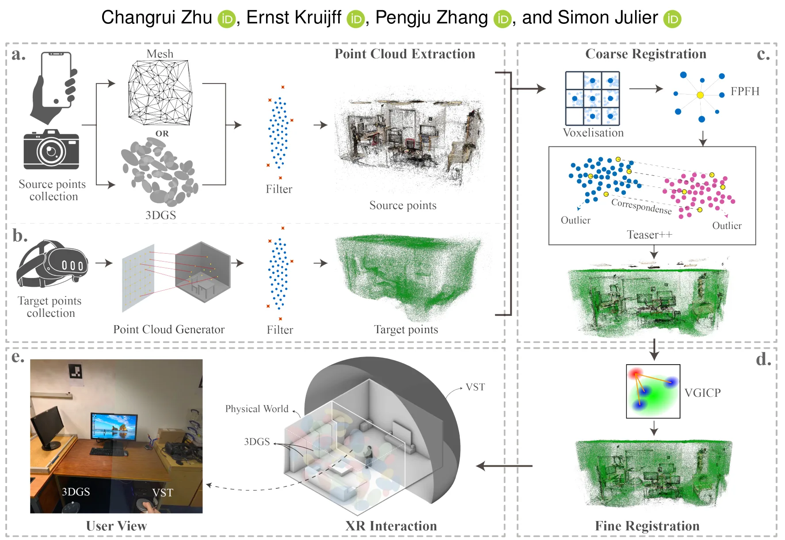
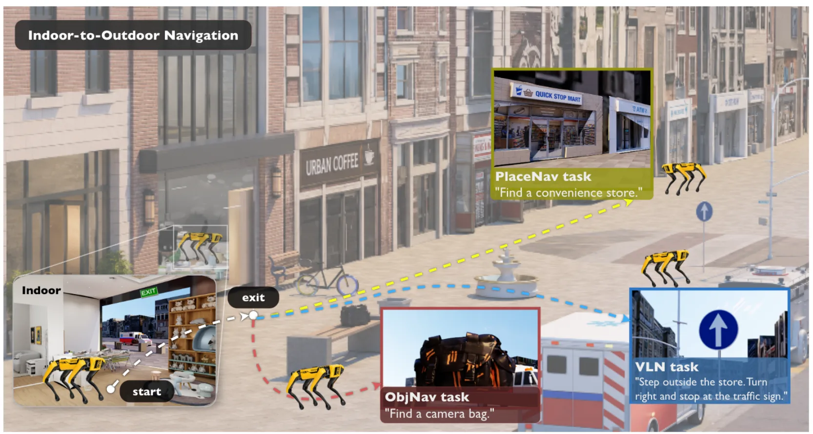

新论文 · 日期 2026-07-23 · score 10 · cs.GR
作者：Changrui Zhu, Ernst Kruijff, Pengju Zhang, Simon Julier
评分 9.2/10
3DGS网格重建三维配准混合现实各向异性剪枝
一句话工作总结：把 3DGS/mesh 与真实环境做厘米级混合现实配准，并以 Gaussian anisotropy 零训练剪枝改善注册。
MR-Compare 是一个混合现实框架，用 live video see-through 将 3D Gaussian Splatting 和 mesh reconstruction 与物理环境做空间对齐比较。系统运行于 PC-tethered Meta Quest 3，结合两阶段注册管线与 3D Slider。作者在两个静态室内房间中评估五种桌面和移动重建工作流，并开展 30 人探索性用户研究；所有工作流均达到厘…
We introduce MR-Compare, a mixed reality framework for spatially grounded visual comparison between 3D Gaussian splatting and mesh reconstructions with live video see-through (VST). Implemented on a PC-tethere…

新论文 · 日期 2026-07-23 · score 8 · cs.GR, cs.ET, cs.MM, eess.IV
作者：Brian Chao, Dario Seyb, Nathan Matsuda, Oliver Cossairt, Yang Zhou, Douglas Lanman, Gordon Wetzstein, Grace Kuo, Changwon Jang
评分 7.2/10
Multiplane Image全息显示波动光学神经渲染三维内容
一句话工作总结：以 MPI 加速三维内容到全息图的波动光学渲染，报告相对 primitive-based CGH 最高 250,000× 加速。
本文提出基于 multiplane images（MPI）的 wave-optics rendering pipeline，用于高效、高质量全息图合成，将三维重建和 novel view synthesis 内容转换为适配 3D holographic displays 的表示。摘要报告其 MPI-based CGH 相对先进 primitive-based CGH 最高加速 250,000 倍，同时保持相近图像质…
Recent advances in neural rendering have unlocked unprecedented capabilities in 3D reconstruction and novel view synthesis, giving rise to applications such as virtual fly-throughs of a 3D scene reconstructed…

新论文 · 日期 2026-07-23 · score 6 · cs.CV, cs.LG, cs.RO
作者：Hamidreza Yaghoubi Araghi, Parastoo Pilevar, Ming C. Lin
评分 6.6/10
边缘机器人模型量化OOD 鲁棒性LoRA视觉感知
一句话工作总结：冻结量化 backbone，仅训练轻量 LoRA head，修补 4-bit PTQ 在噪声、天气和新环境下的 OOD 鲁棒性缺口。
本文指出 post-training quantization 虽常保持 clean in-distribution accuracy，却会在传感器噪声、恶劣天气和新环境等分布偏移下形成 Quantization-Induced Robustness Gap。Recti-Q 冻结量化视觉 backbone，仅用 source data 训练小型 classifier-head LoRA adapter，在 CNN…
Robotic perception pipelines increasingly rely on large vision backbones deployed on SWaP-constrained edge platforms, making post-training quantization (PTQ) attractive for real-time inference. However, while…

新论文 · 日期 2026-07-23 · score 4 · cs.RO, cs.AI
作者：Joshua Citron, Renee Zbizika, Zeyi Liu, Shuran Song
评分 6.1/10
遥操作移动操作主动感知数据采集开源硬件
一句话工作总结：以自包含背包和插拔模块统一双臂移动操作遥控、主动感知及多平台数据采集。
ModPack 是一个模块化、可扩展的遥操作系统，通过自包含 wearable backpack 集成 onboard computation、power、communication 与 data storage。在共享接口之上，系统支持 joint-level teleoperation、haptic feedback、mobile manipulation 和 active perception 等 plug-…
Existing teleoperation systems are often tailored to specific robot hardware and task domains, limiting their scalability and adaptability. We present ModPack, a modular and extensible teleoperation system des…

新论文 · 日期 2026-07-23 · score 4 · cs.RO, cs.CV
作者：Junzhe Wu, Yue Hu, Zeyu Han, Po-Hsun Chang, Yinan Dong, Behrad Rabiei, Maani Ghaffari
评分 7.8/10
具身导航室内外连续场景导航基准VLA机器人仿真
一句话工作总结：用连续 physics-enabled episodes 统一测试室内、出入口穿越和城市室外导航，暴露跨环境适应与执行失败。
NavVerse 是面向室内到室外连续具身导航的 physics-enabled benchmark，包含 100 个室内场景、50 个城市室外场景、50 个室内—室外场景及 10,000 个 episodes，覆盖 Object Navigation、Vision-and-Language Navigation 与 Place Navigation。Agent 通过可执行机器人接口接受任务成功率、路径效率和安全性…
Robots deployed in delivery, campus, and emergency-response settings often need to navigate from buildings to streets within a single continuous episode. Existing benchmarks usually evaluate indoor and outdoor…